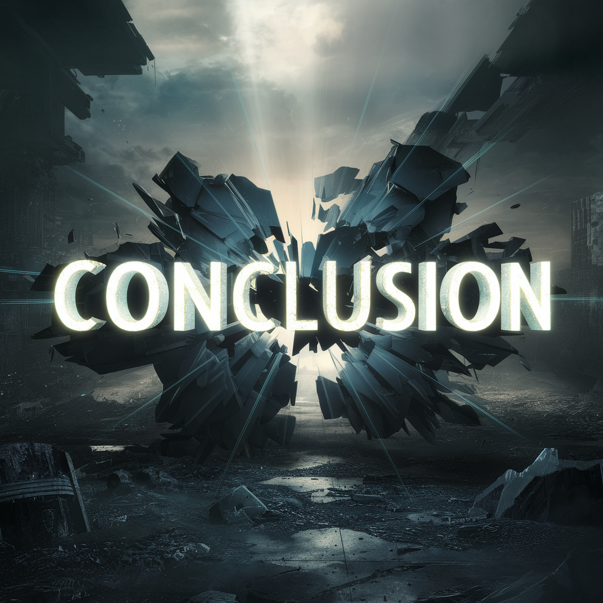

Conclusion

Les infox représentent un défi majeur dans notre société numérique, avec des conséquences potentiellement graves.
Cependant, en cultivant notre esprit critique et en adoptant des pratiques de vérification des faits, nous pouvons nous prémunir contre leur propagation et préserver l'intégrité de l'information.
Il est essentiel de rester vigilants, de questionner les sources et de promouvoir une culture de la transparence et de la responsabilité dans la diffusion de l'information pour la santé et la sécurité:
Informations erronées sur des sujets tels que la santé, l'environnement ou la sécurité peuvent mettre en danger le bien-être des individus et des communautés.